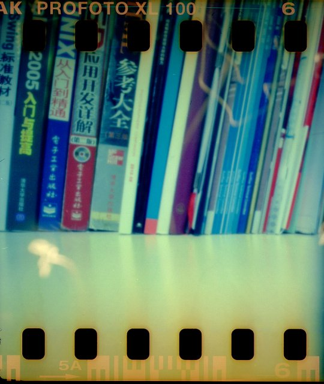
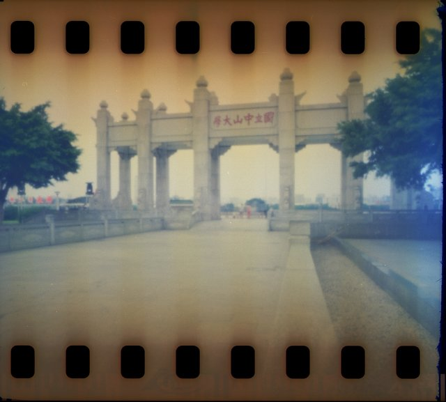
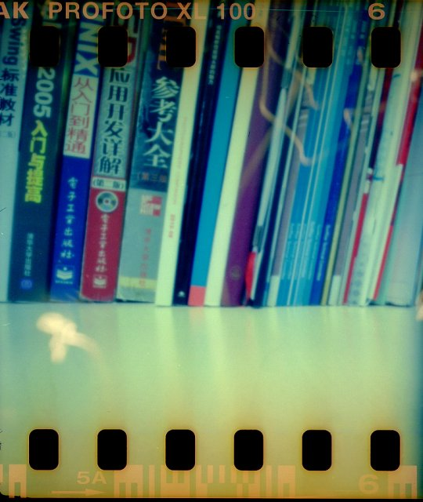
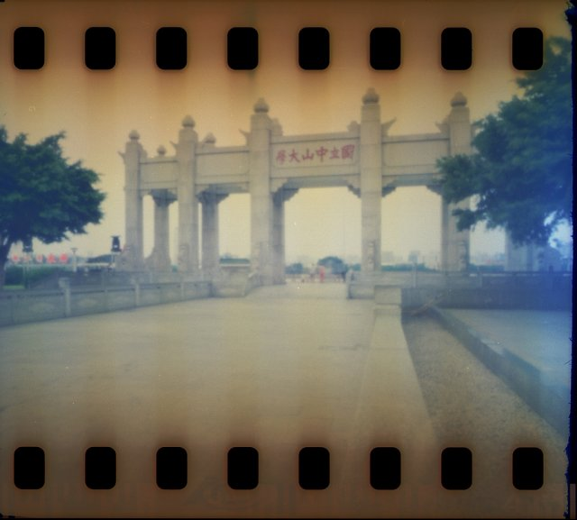

pinhole相机拍摄的效果
由于针孔对孔径打磨精度要求极高，微小的误差都会导致成像不够清晰，用砂纸纯手工打磨出这样的效果已经让我很满意了。不过估光真是个技术活，再加上手脚反应不够迅速，没能及时关闭快门，很多照片都有过爆一档的倾向。幸好负片有较高的宽容度，拍出来的基本都还可以看，哈哈。  
由于针孔对孔径打磨精度要求极高，微小的误差都会导致成像不够清晰，用砂纸纯手工打磨出这样的效果已经让我很满意了。不过估光真是个技术活，再加上手脚反应不够迅速，没能及时关闭快门，很多照片都有过爆一档的倾向。幸好负片有较高的宽容度，拍出来的基本都还可以看，哈哈。  